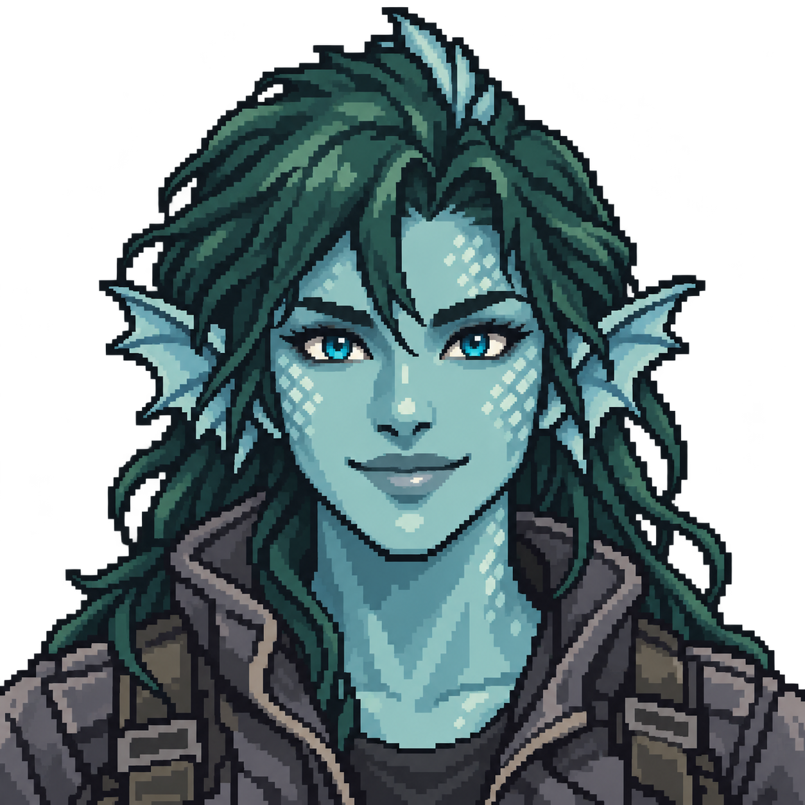
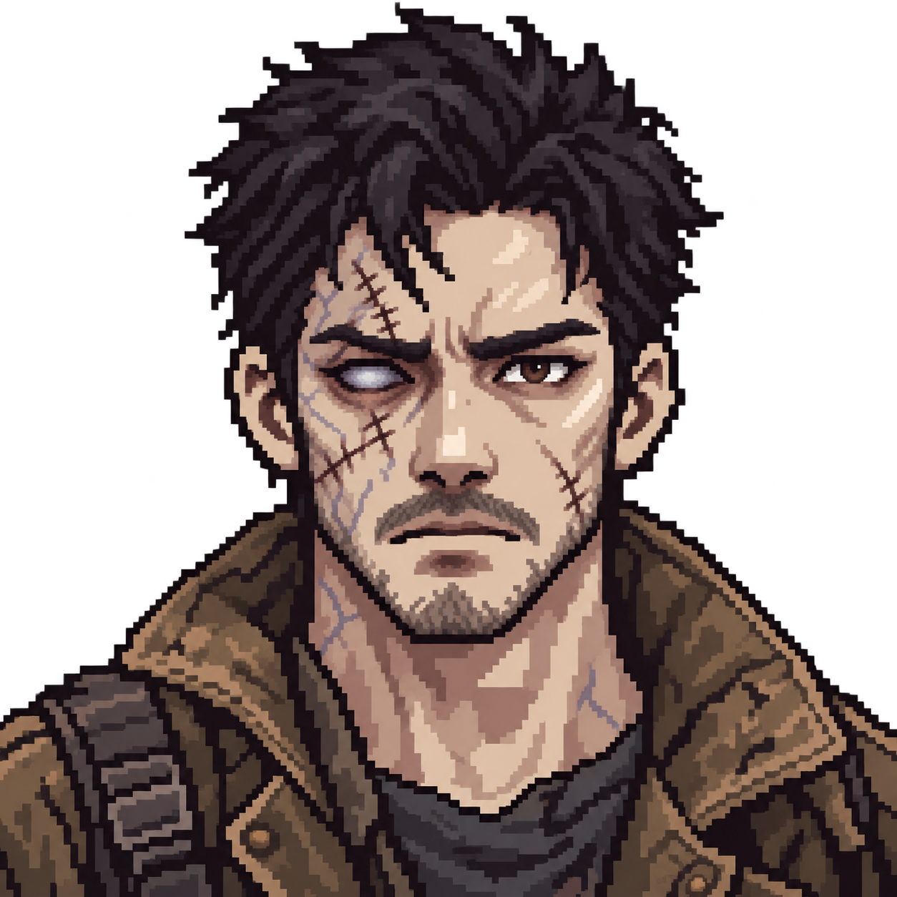
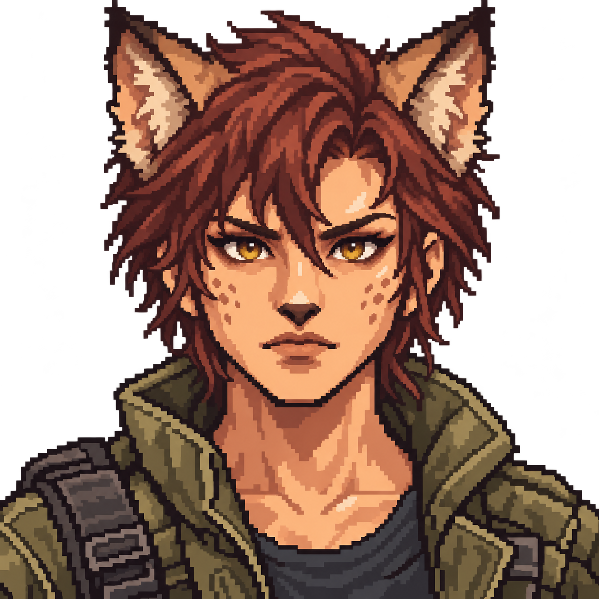
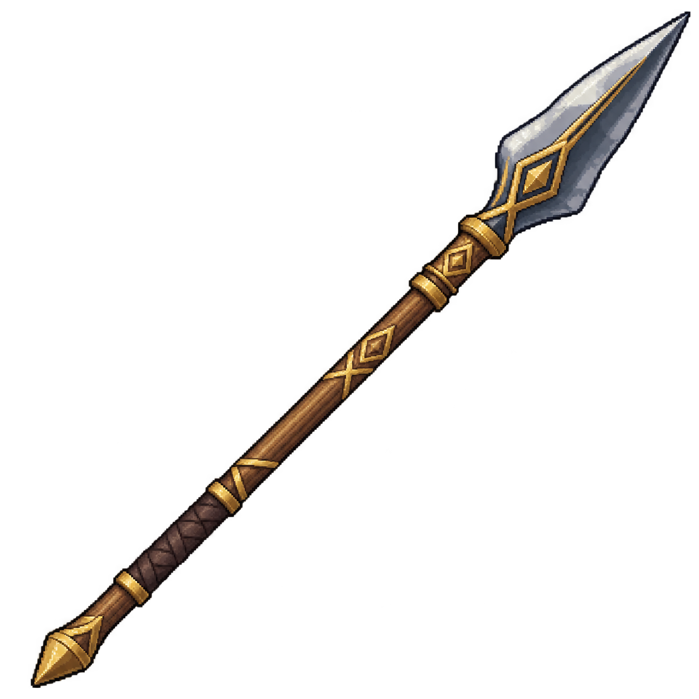
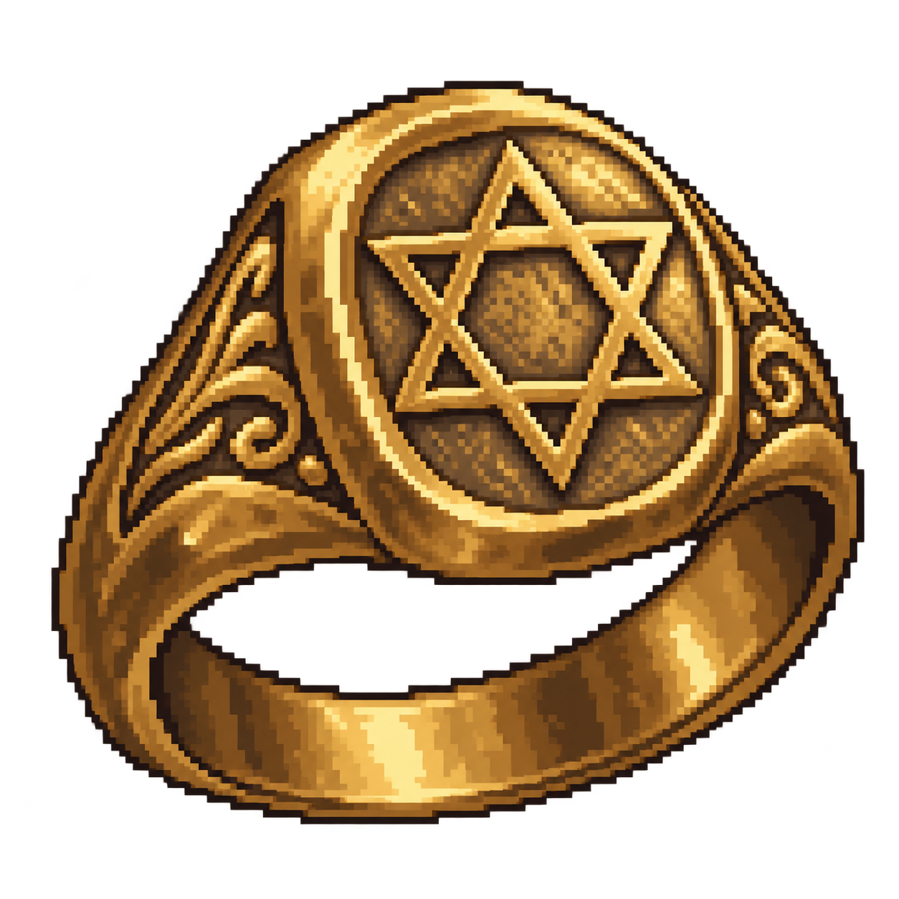
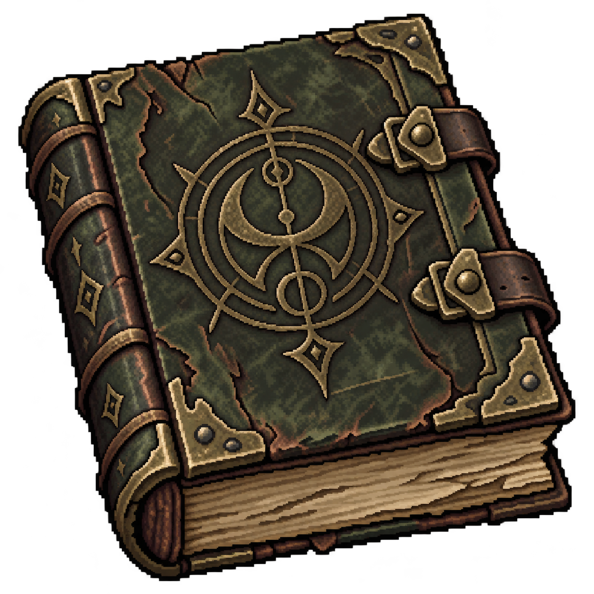
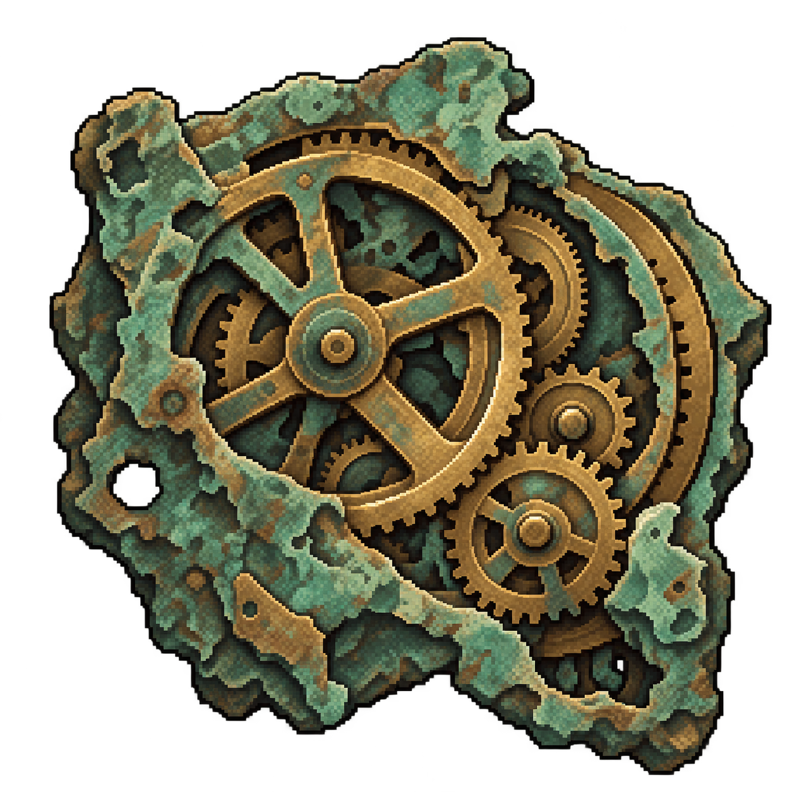
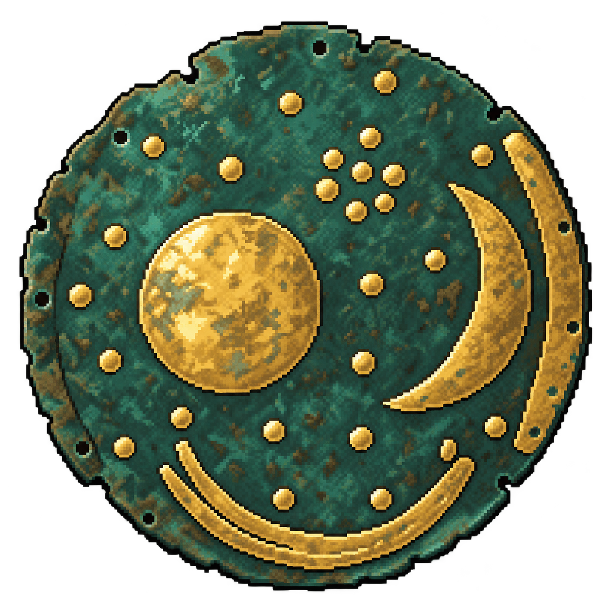
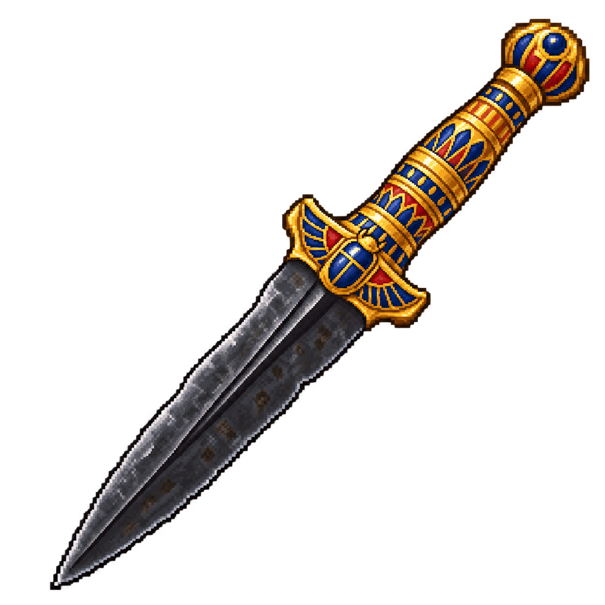

통합 오더 · 신규 리소스12종카엘
탐사에서 영입하는 희귀 생존자

네리사
탐사에서 영입하는 희귀 생존자

베이르
탐사에서 영입하는 희귀 생존자

라이라
탐사에서 영입하는 희귀 생존자

궁니르
최초0/0 · 전승 기록으로 성장
성배
최초0/0 · 전승 기록으로 성장

솔로몬의 반지
최초0/0 · 전승 기록으로 성장

네크로노미콘
최초0/0 · 전승 기록으로 성장

안티키테라 기계
최초0/0 · 전승 기록으로 성장

네브라 하늘 원반
최초0/0 · 전승 기록으로 성장

투탕카멘의 운석 단검
최초0/0 · 전승 기록으로 성장
나폴레옹의 이각모
최초0/0 · 전승 기록으로 성장